~ Places to Visit in Chennai ~
Popular things to do

Beaches
Top Attractions in Chennai
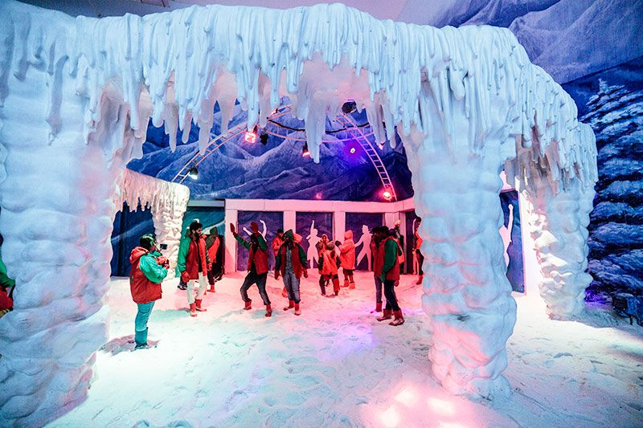
VGP Snow Kingdom
Snow Kingdom is India's largest snow theme
park. It is an indoor, snow-themed entertainment
park, where visitors can experience the thrill
of playing in the snow any day of the year. The
park provides sterilised, cold weather clothing to
allow visitors to cope with the sub-zero temperature
inside. The snow is made by reverse osmosis of water.
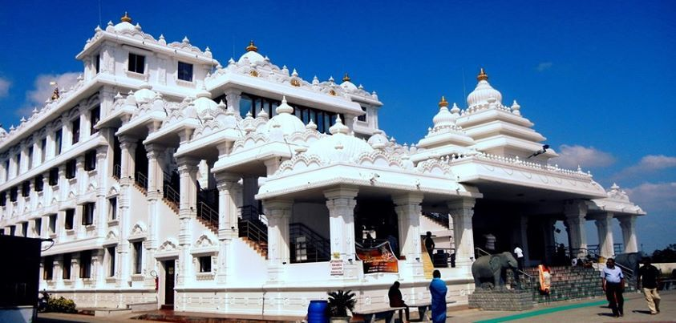
ISKCON Temple
ISKCON Temple Chennai, also known as the Sri Sri
Radha Krishna Mandir, is a Gaudiya Vaishnavism
temple in Chennai, India. The temple is dedicated
to Hindu god Radha and Krishna.
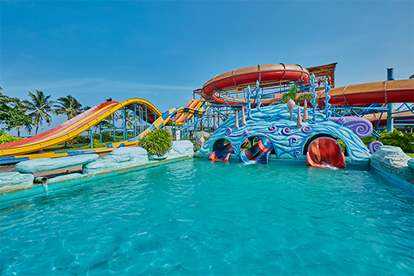
VGP Universal Kingdom
Located in the East Coast Road in Chennai,
VGP Universal Park was once a small park but
in the year 1997, it was transformed into an
amusement park. The park has around 37 rides,
the most famous being- VGP 2000 millennium
tower, Water cascades, Paneer fort and statueman.
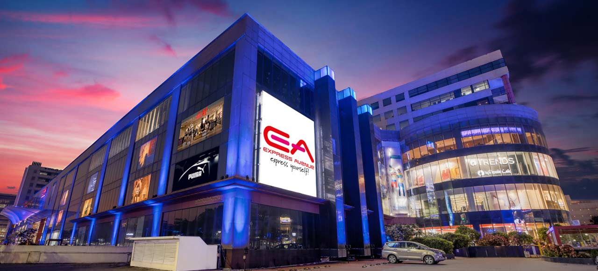
Express Avenue Mall
Chennai’s finest destination for Fashion, Lifestyle &
Entertainment. California based Giovanni Castor played
a major role in designing the Escape cinema hall. The
Express Avenue mall is home to Hamley's- England's
iconic toy store,
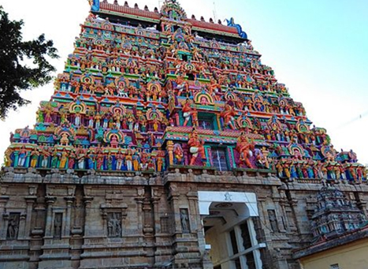
Kapaleeshwarar Temple
The 16-pillared, granite-roofed structure, known
as the mandapam at the centre of this tank is known
for its significance during the three-day annual
float festival, when idols of Lord Kapaleeshwarar
and other deities are taken around the tank to the
chanting of Vedic hymns.
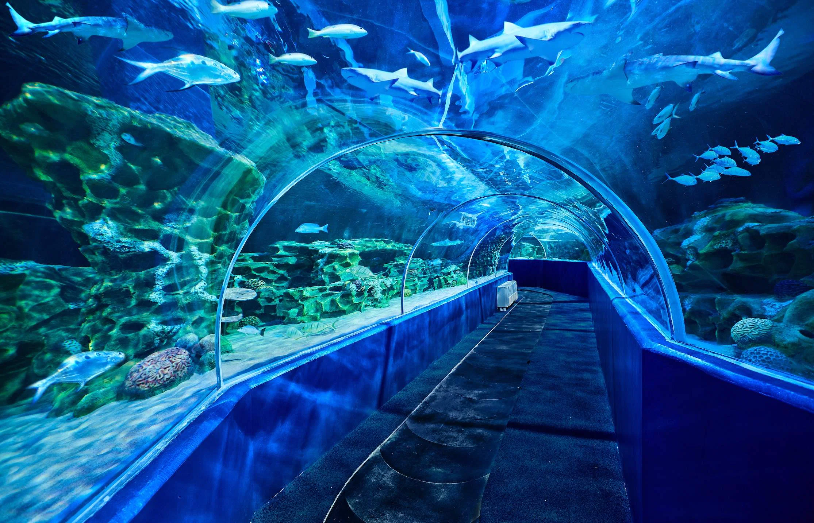
VGP Marine Kingdom
The VGP Marine Kingdom avant garde walk-through
aquarium is India's first and largest, acclaimed
by many in equal measure as the famous one Sentosa
Island, Singapore, and other world class aquariums
in the world.
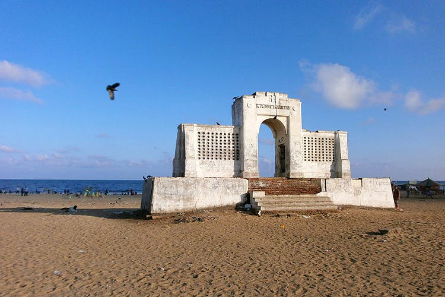
Besant Nagar Beach
This beach is located in Besant Nagar and this beach is said to
be the end point of the Marina Beach shore. This calm beach is
quite clean and you can peacefully spend time here. Besant Nagar
beach is also fondly called as Bessy beach by the locals.
The neighbourhood is an affluent one and it mostly consists
of individual houses and bungalows.
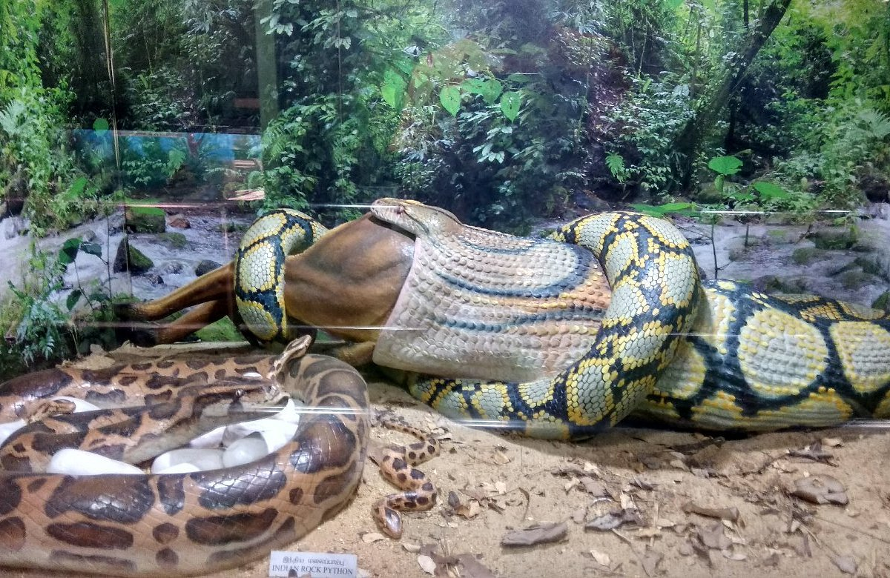
Guindy Snake Park
The park has a museum of preserved specimens
of reptiles and amphibians and a library with
a stock of books and journals on reptiles and
related subjects. The park also demonstrates
venom extraction from snakes.
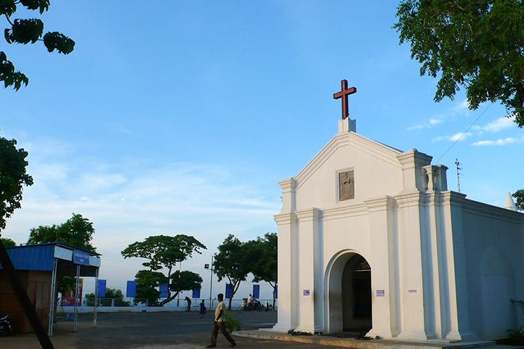
St. Thomas Mount National Shrine
It is one of the only three churches of the apostolic
age of ancient Christianity, known for enshrining the
tomb of an apostle and are still standing in the world
today; the other two being the St Peter's Basilica in
Vatican City and Santiago de Compostela Cathedral in
Galicia, Spain.
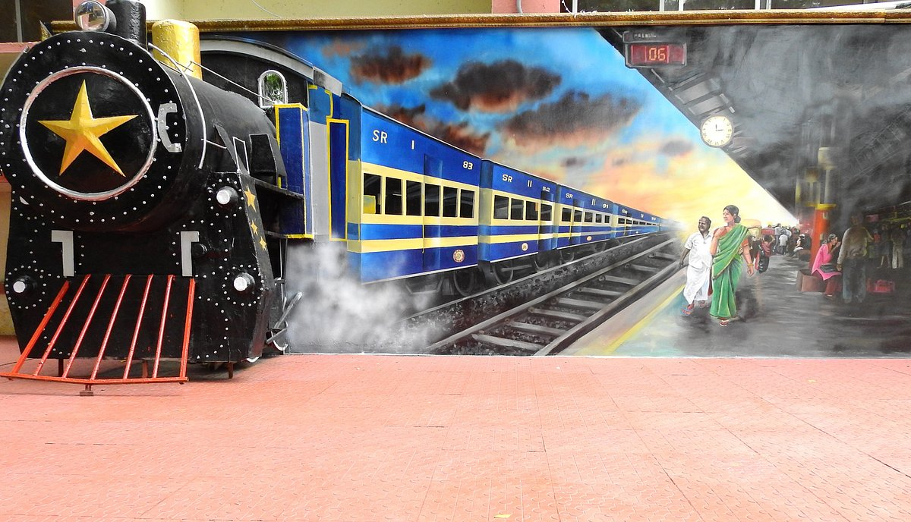
Chennai Rail Museum
This museum begins with the unique collection of Indian
locomotives which reflect the glory days of Indian Railways,
back during the British Period. Along with that, the indoor
display section of the museum also exhibits a collection of
rare photographs and artefacts of the commencing years of
Indian Railways.

Shirdi Sai Baba Temple
hirdi Sai Baba Temple is a Hindu temple located in the
neighbourhood of Mylapore in Chennai, India. It is
dedicated to the Indian saint Sai Baba of Shirdi.
The temple was built in 1952 by one B V Narasimhaswami,
a Salem and Sai Baba devotee, out of money donated by a
Chettiar merchant. This is considered the most trusted
temple in India.
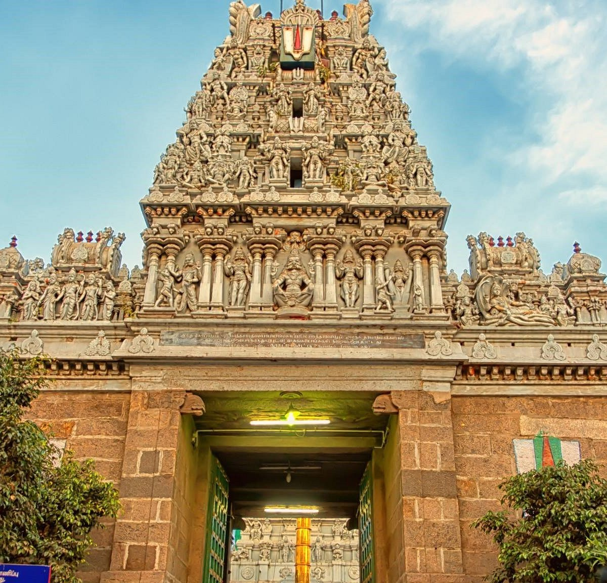
Parthasarathy Temple
It is one of the very few shrines in the country dedicated
to Krishna as Parthasarathy, charioteer of Arjuna and to
contains idols of three avatars of Vishnu: Narasimha, Rama,
and Krishna. Unusually, he is depicted with a prominent
moustache and carries a conch in his hand.